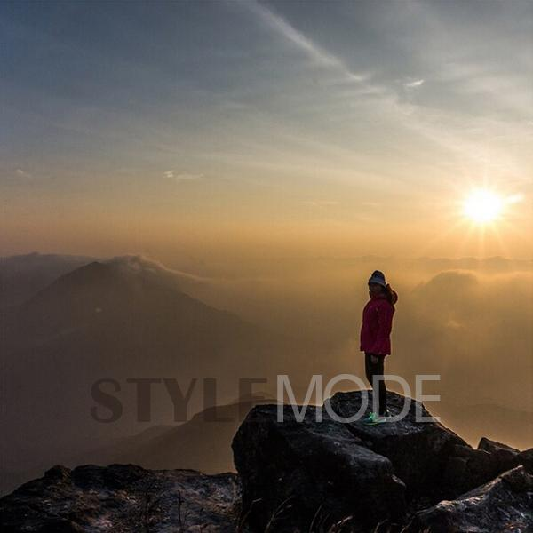
6am: 看日出香港是令人惊奇的多山地区，最佳的观赏日出地点是大屿山南部和大屿山的顶峰。如果你能在昂坪青年旅馆住一晚，次日清晨将会缩短你徒步旅行的时间，让你拥有生机勃勃的两个小时。
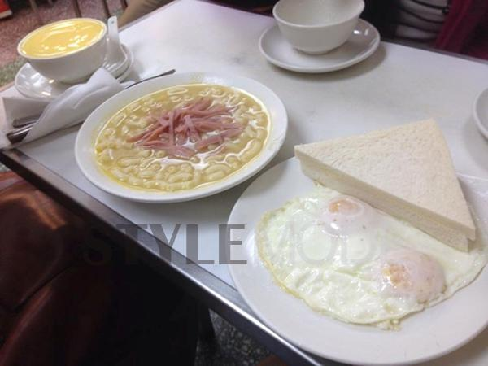
7am: 试试香港的传统早餐在香港，这种中西结合廉价的早餐食品是通心粉汤、炒蛋和火腿三明治。
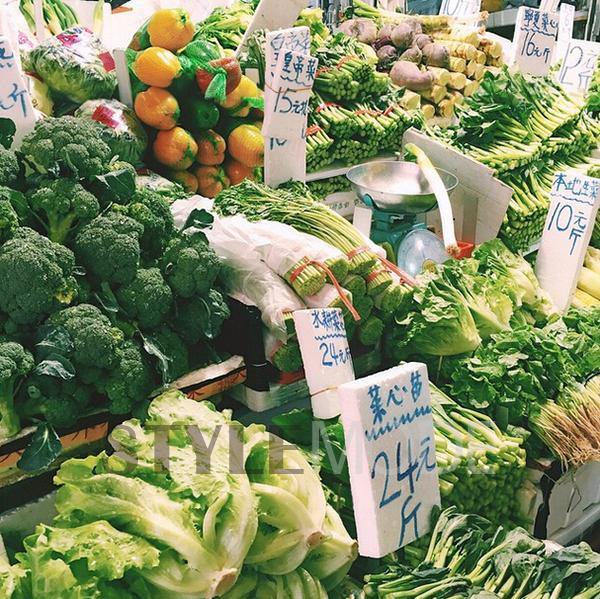
8am: 探索菜市场菜市场几乎遍布香港的所有地区，是当地人购买当天需要杂货的地方，前往的最佳时间是早上，人们会买到最好的食材做晚饭。
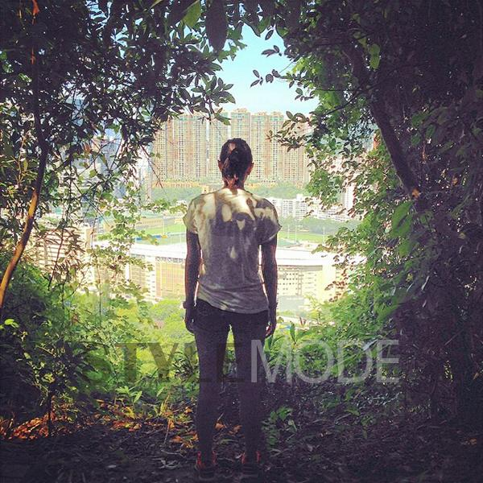
9am: 步行到宝云道健身径这是位于宝云道上的一处城市丛林，从半山腰的欢乐谷到这里大概有4千米的距离。它广受慢跑者、散步、遛狗人士的欢迎，两侧绿荫成凉，美到令人窒息的香港美景尽收眼底。

10am: 参观蓝屋这座明亮的蓝色唐楼可以追溯到19世纪20年代，是活生生的湾仔生活博物馆，生活在里面的租户和摊贩仍旧像几十年前一样在生活。周围地区的石头流水巷值得一年，这里也有时髦的酒吧和餐饮店，4S店和慈善商店。
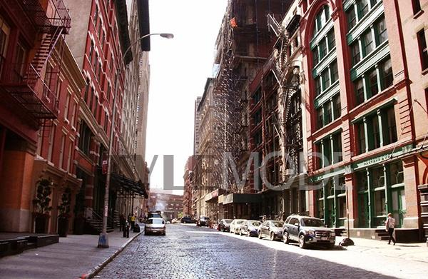
11am: 探索 PoHo 时尚区SoHo西边，普庆坊，或是“PoHo”，这里是创意产业的温床，有很多家时尚酷炫的咖啡馆和时髦的艺术画廊，可以在这一区愉快地漫步，走过历史的梯田，看看传统的印刷机商店。由于租金上涨，很多独立的书店想要搬走。
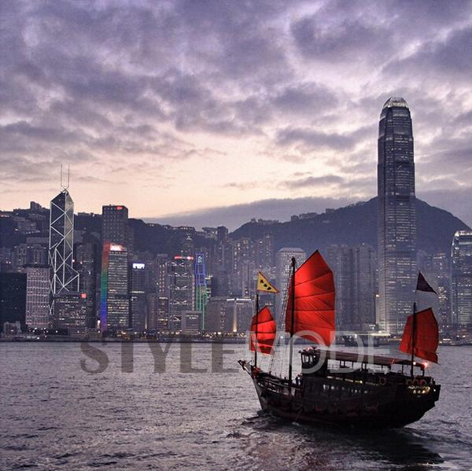
中午: 旅游古董帆船港口张保仔帆船是一艘美丽的保有中国传统的帆船，它每周一至周五从中午开始旅游到下午四点。
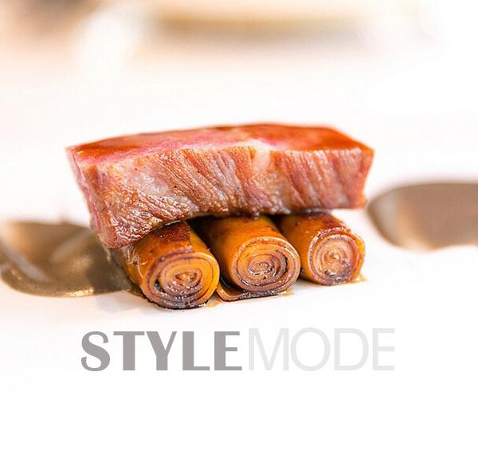
1pm: 午餐香港商业区的周围，经营的都是家庭式的午餐，你不必像银行家一样利用午餐时间聚集在最精致的餐厅里

2pm: 英式下午茶依照你的旅游线路，可以有一份豪华的下午茶，在历史悠久的半岛酒店大厅里有英式风格的下午茶可供选择。手指三明治、甜点和三层烤饼是下午茶的主要食物，通常这里都会排很长的队伍，所以一定要早点区。下午茶提供时间是下午的两点到六点。
3pm: 港式下午茶香港人的传统是下午3：15时买些甜点和一杯浓奶茶以作下午茶。火奴鲁鲁咖啡店以其甜点、片状蛋挞和其他轻品味糕点闻名，你可以试试将黄油塞在松软的糕点中的菠萝包，口感甜腻，皮薄酥脆。
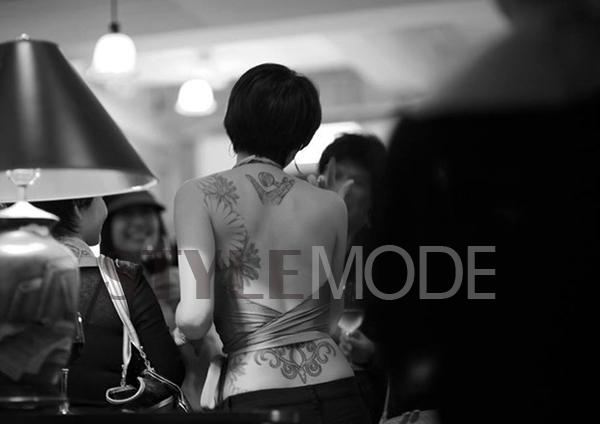
4pm: 纹身如果你正在寻找一个更永久的纪念品，这个小镇上有很多技艺高超的纹身艺术家。可以尝试下 Sze C. 的手艺，她的书法风格真的非常可爱。
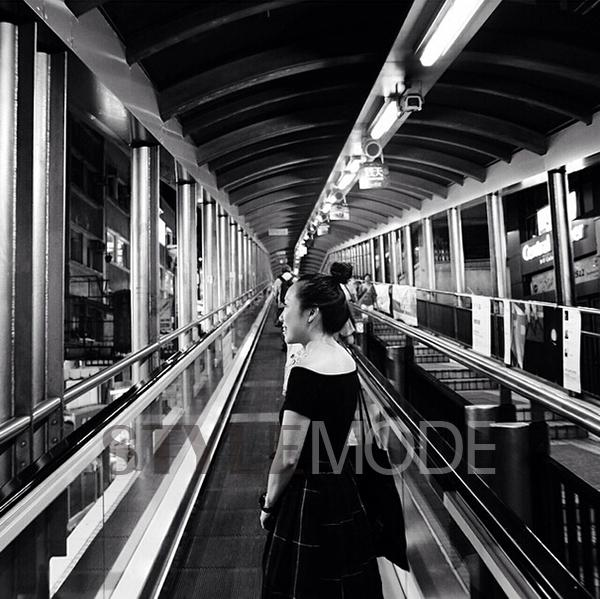
5pm: 登上半山自动扶梯这里有世界上最大的自动扶梯网络，半山自动扶梯连接半山住宅区和城市中心，每天早晨送人们上班，晚上再接他们回家。在上面，看着城市地形变化越来越高，你会喜欢沿途的风景的。
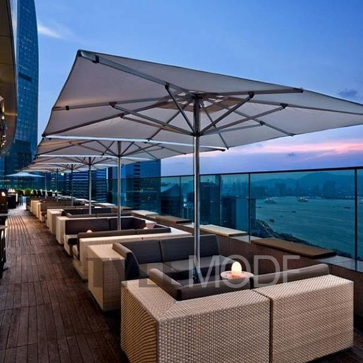
6pm: 一段好视角的快乐时光鸡尾酒和俯瞰港口是拥有一段好时光必备的，但是如何才能找到一个好的观赏视角呢？东隅酒店屋顶酒吧有一个大型露天甲板，可以让你尽情享受快乐时光，营业时间是早五晚七。
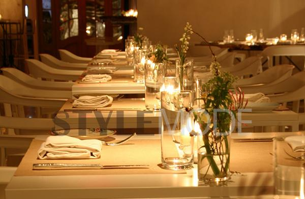
7pm: 市场摊位的欧洲晚餐脱离香港疯狂的租金，ABC Kitchen 提供美味的欧洲美食。